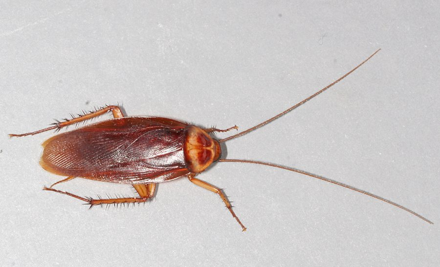

अमेरिकी तिलचट्टाAmerican Cockroach
Periplaneta americana · Blattidae · SFL-0006

- Scientific name
- Periplaneta americana (Linnaeus, 1758)
- Family
- Blattidae
- Hindi
- अमेरिकी तिलचट्टा
- Status here
- naturalized
- IUCN
- not evaluated
When to look कब देखें
Present all year.
अमेरिकी तिलचट्टा / American Cockroach
Periplaneta americana (Linnaeus, 1758) — Blattidae
अमेरिकी तिलचट्टा — उत्तर प्रदेश के घरों, नालियों, गोदामों और रसोईघरों में पाया जाने वाला सबसे बड़ा और सबसे आम तिलचट्टा (largest common household cockroach) है। इसकी लंबाई लगभग 35 से 40 मिमी तक होती है। इसका शरीर चमकीला लाल-भूरा या शाहबलूत-भूरा (reddish-brown or chestnut-brown) होता है और इसके सिर के पीछे की ढाल (pronotum) पर एक हल्का पीला या मटमैला पीला किनारा बना होता है। यह मूल रूप से उष्णकटिबंधीय अफ्रीका का निवासी है, जो वैश्विक व्यापार के माध्यम से पूरी दुनिया में फैल गया और अब भारत में पूरी तरह से अभ्यस्त (naturalized) हो चुका है। यद्यपि इसे मुख्य रूप से एक अवांछित घरेलू कीट के रूप में देखा जाता है, लेकिन प्रकृति में यह एक महत्वपूर्ण अपघटक (decomposer/detritivore) है, जो जैविक कचरे और सड़े-गले पदार्थों को खाकर उन्हें मिट्टी में मिलाने में मदद करता है। यह रात के समय सक्रिय होता है और कम दूरी तक उड़ने में सक्षम है।
Quick Identification त्वरित पहचान
| Feature | Description |
|---|---|
| Size | Very large cockroach; adult body length around 35–40 mm |
| Colouration | Glossy chestnut-reddish-brown; pronotum has a distinct yellowish band along the posterior margin |
| Wings | Long wings that cover and extend past the tip of the abdomen in both sexes; capable of short, clumsy flights |
| Antennae | Extremely long, thin, thread-like antennae, often longer than the body |
| Cercids | A pair of short, multi-segmented sensory appendages (cerci) projecting from the tail tip |
Field tip: Inspect dark kitchen corners or drains at night. Switch on the light; you will see large, reddish-brown insects with very long antennae running rapidly to hide. In hot, humid weather, they may also fly short distances when startled. The female is slightly broader than the male and is shown in the field tip.
Morphology आकारिकी
Biometrics (typical measurements of adults in the northern Indian plains):
| Measurement | Range |
|---|---|
| Body length | 35–40 mm |
| Forewing length | 30–38 mm |
| Antennae length | 40–50 mm |
| Ootheca (egg capsule) length | 8–10 mm |
| Average weight | 800–1200 mg |
Adult Cockroach:
- Exoskeleton: Flattened body, adapted to crawl into narrow cracks. Carapace (pronotum) is large, shield-like, covering the head. Color is glossy reddish-brown, with a yellow-tinted border on the pronotum.
- Wings: Fully developed. The front pair (tegmina) is leathery and protective; the rear wings are thin and transparent, used for flight.
- Legs: Long, covered with prominent black spines, adapted for running. Tarsi (feet) have adhesive pads (arolia), allowing them to climb smooth glass walls or ceilings easily.
Behaviour & Ecology व्यवहार और पारिस्थितिकी
- Nocturnal Scavenger: Remains hidden in dark cracks, sewers, or under appliances during the day. It emerges at night to search for organic matter, using its antennae to smell food in the dark.
- Rapid Running: Moves very fast, running at speeds of up to 1.5 meters per second (relative to body size, this is equivalent to a human running at 330 km/h).
- Thigmotaxis: Exhibits a strong preference for tight spaces where its body touches surfaces on both the top and bottom. This contact behavior makes them feel secure from predators.
Life Cycle / Phenology जीवन चक्र
- Reproduction: Breeds year-round in the warm, indoor environments of UP.
- Ootheca (Egg Capsule): The female does not lay eggs singly. Instead, she produces a hard, purse-like, dark brown protein capsule called an ootheca, containing 14–16 eggs. She carries it at the tip of her abdomen for a few hours to a day, then glues it to a hidden surface (like wood cracks or under cupboards).
- Nymphal Growth: Nymphs hatch in 30–50 days. They look like mini wingless adults, undergoing 10–13 moults over 6–12 months to reach maturity. Adults can live for 1 to 2 years.
Diet and Feeding Behaviour आहार और भोजन व्यवहार
- Omnivorous Scavenger: As a detritivore, it consumes almost any organic matter.
- Diet: Feeds on decaying organic waste, fallen leaves, pet food, kitchen crumbs, paper, cardboard, and book bindings. In natural outdoor settings, they feed on leaf litter and animal carcass remnants, recycling nutrients back into the soil.
Predators / Natural Enemies शत्रु
- Arthropods: House Centipedes (Scutigera coleoptrata, MYR-0004, from this batch) and large huntsman spiders actively hunt and eat them.
- Vertebrates: House geckos (Hemidactylus flaviviridis), domestic cats, and insectivorous bats capture them.
- Parasitic Wasps: Ensign wasps (Evaniidae) are specialized egg parasites; they lay eggs inside the cockroach ootheca, and the wasp larva consumes the developing cockroach eggs.
Agricultural / Human Relevance कृषि प्रासंगिकता
Domestic pest and sanitary vector:
- Sanitary risk: Since they crawl in sewers and garbage, they carry pathogenic bacteria (Salmonella, E. coli) and viruses on their legs and bodies, contaminating kitchen counters and food.
- Allergens: Their shed skins and feces contain proteins that can trigger asthma and allergic reactions in children.
- Decomposition role: In wild settings, they are beneficial decomposers, chewing up dry leaves and organic debris, aiding soil formation.
Expected Locally स्थानीय रूप से अपेक्षित
Not a field record. Written from published accounts for eastern Uttar Pradesh. No confirmed local sighting yet — if you have seen it, that is what the atlas needs.
अभी तक स्थानीय पुष्टि नहीं। यह विवरण प्रकाशित स्रोतों से है, किसी अवलोकन से नहीं।
A very common resident inside homes and sewage systems throughout the Basti district. They are regularly observed in kitchens and bathrooms of the Harraiya, Vikramjot, and Basti blocks. During the high humidity of the monsoon (July to September), populations increase, and they are frequently seen flying near lights.
Distribution वितरण
Global range: Native to tropical Africa; introduced globally via shipping and commerce, now found in all warm temperate and tropical countries.
In India: Widespread in all cities, towns, and villages across the country.
In Uttar Pradesh: Abundant state-wide in all residential and commercial districts.
In Basti district / eastern UP: Common across all blocks near human habitations.
Research Questions शोध प्रश्न
Anyone can investigate these | कोई भी इन प्रश्नों की जाँच कर सकता है
- How many seconds does an American Cockroach run to find cover when a bathroom light is turned on? — Measure flight reactions.
- Do cockroaches prefer feeding on starch-rich foods (like bread) over protein-rich foods (like cheese)? / क्या तिलचट्टे प्रोटीन युक्त भोजन (जैसे पनीर) की तुलना में स्टार्च युक्त भोजन (जैसे रोटी) खाना अधिक पसंद करते हैं? — Conduct bait choice tests.
- What is the average number of egg capsules (oothecae) a single female cockroach produces in a month during summer? — Track captive breeding.
- How do ensign wasps search for and parasitize cockroach egg capsules in your house? — Observe and document wasp behavior.
- Does the population density of American Cockroaches drop in winter compared to the monsoon months in Basti? / क्या बस्ती में मानसून के महीनों की तुलना में सर्दियों में अमेरिकी तिलचट्टों की आबादी कम हो जाती है? — Monitor trap counts across seasons.
Similar Species मिलती-जुलती प्रजातियाँ
| Species | How to tell apart | comparison |
|---|---|---|
| Oriental Cockroach (Blatta orientalis) | Smaller (20–27 mm); dark brown to black body; female has vestigial wing stubs and cannot fly; prefers cooler areas | पूर्वी तिलचट्टा — छोटा आकार, काला रंग, पंखों का अभाव |
| German Cockroach (Blattella germanica) | Much smaller (12–15 mm); light brown with two dark parallel stripes on the pronotum; domestic only | जर्मन तिलचट्टा — बहुत छोटा आकार, दो काली धारियाँ |
| Field Cricket (Gryllus bimaculatus) | Black body; has large jumping hind legs; makes a loud chirping sound; found in fields | झींगुर — कूदने वाले पैर, चीं-चीं की आवाज |
Field rule: Very large reddish-brown cockroach (35–40 mm) with a yellowish posterior margin on the pronotum and wings that cover the tail, running with extreme speed at night, is the American Cockroach.
Taxonomy & Classification वर्गीकरण
Original description. Carl Linnaeus described the American Cockroach as Blatta americana in 1758 in his Systema Naturae (ed. 10, vol. 1, p. 424). The type locality was listed as America (due to early imports from trade). Burmeister placed it in the genus Periplaneta in 1838. The genus name Periplaneta is derived from the Greek peri (around) and planetes (wanderer). The specific name americana refers to the Americas.
Subspecies. Monotypic — no subspecies are currently recognised.
Family and order placement. Placed in the order Blattodea, family Blattidae (large cockroaches), subfamily Blattinae.
Phylogenetic notes. Periplaneta americana belongs to an ancient group of insects (Blattodea) that has remained relatively unchanged for over 300 million years, displaying high physiological resilience and survival.
IUCN status rationale. Not evaluated (NE) by the IUCN Red List. It has a highly secure and expanding global population.
Photo Gallery फोटो गैलरी
References संदर्भ
- Linnaeus, C. (1758). Systema Naturae. Tenth Edition. Holmiae, p. 424. [original description]
- Bell, W. J., Roth, L. M. & Nalepa, C. A. (2007). Cockroaches: Ecology, Behavior, and Natural History. Johns Hopkins University Press, Baltimore.
- Beier, M. (1974). Blattariae (Schaben). Handbuch der Zoologie, Walter de Gruyter, Berlin.
- Rust, M. K., Owens, J. M. & Reierson, D. A. (1995). Understanding and Controlling the German Cockroach (includes comparative tables for American). Oxford University Press.
- Cockroach Species File Database (2024). Periplaneta americana details.
- GBIF Occurrence Data — Periplaneta americana, Uttar Pradesh (2010–2025).
Source file: species/fauna/soil_fauna/american_cockroach.md